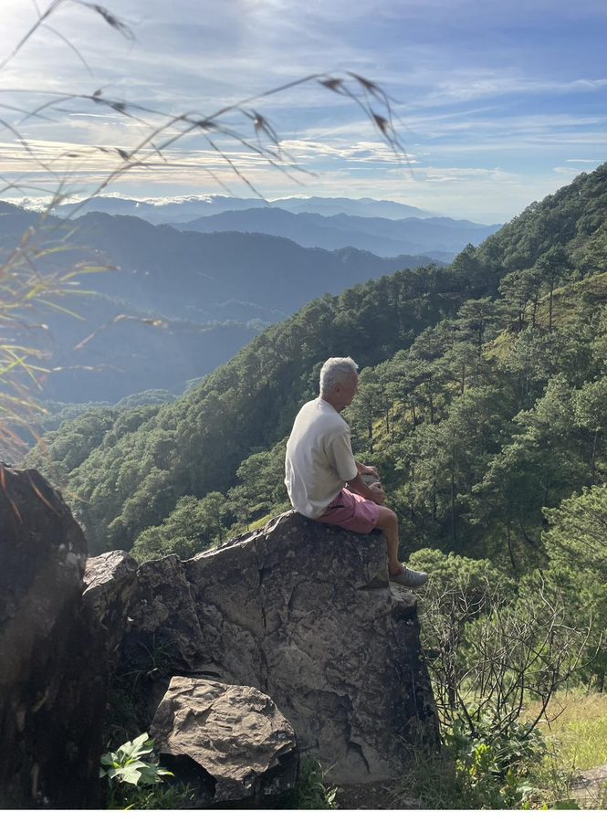
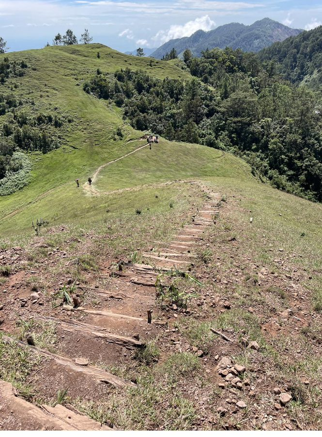
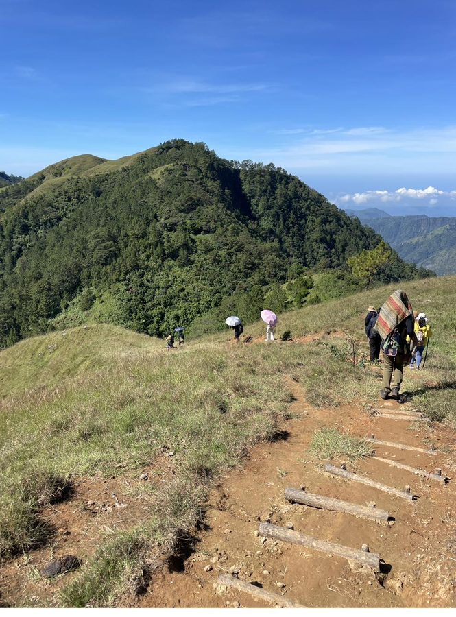
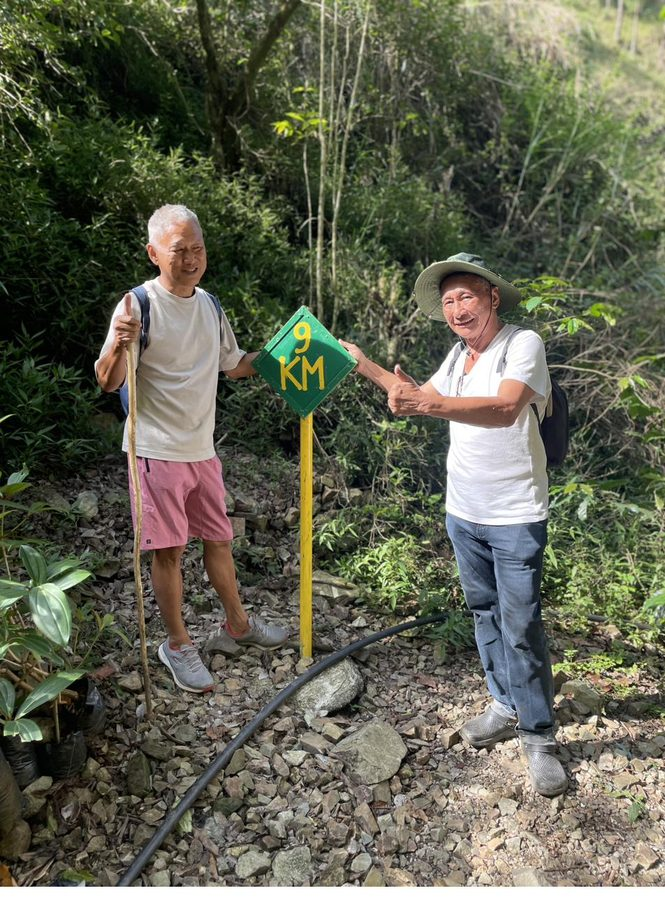
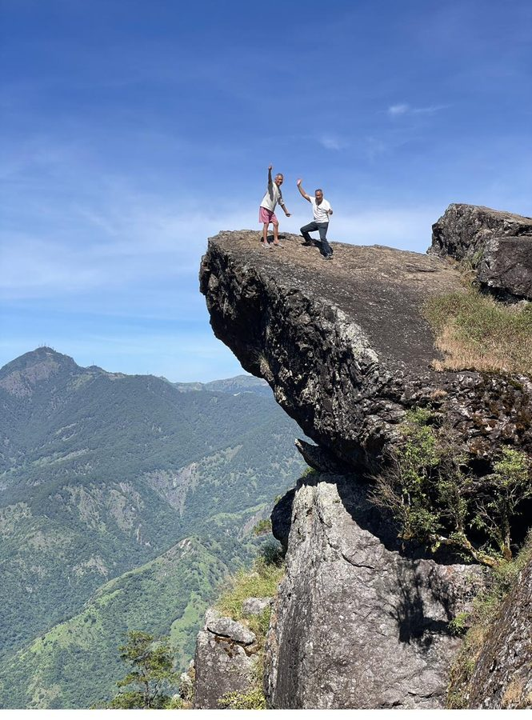
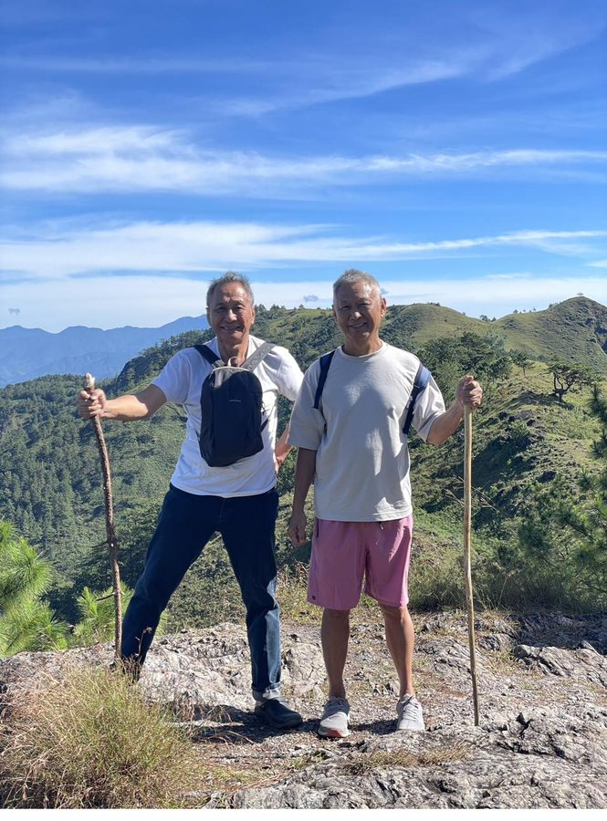
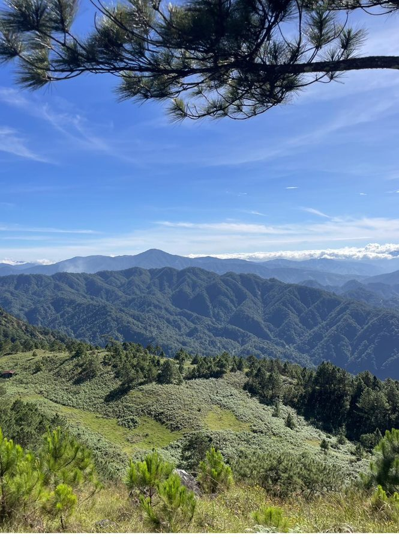
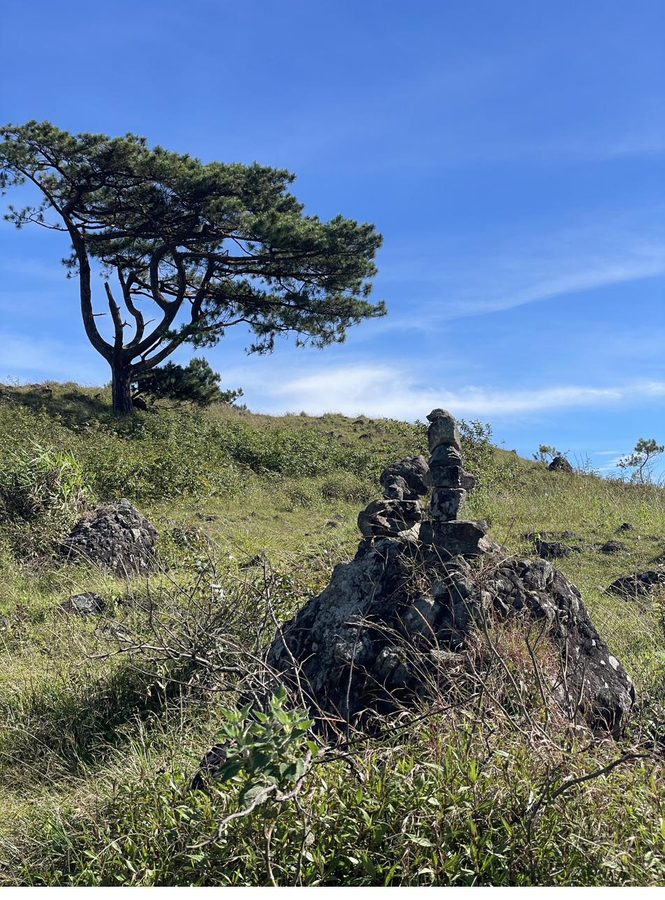
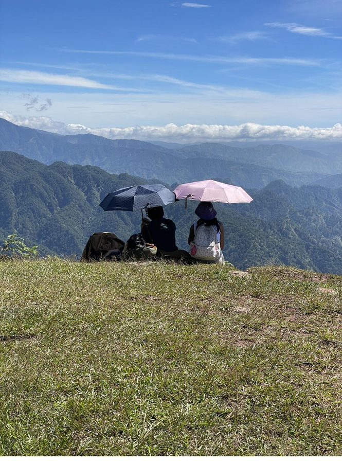
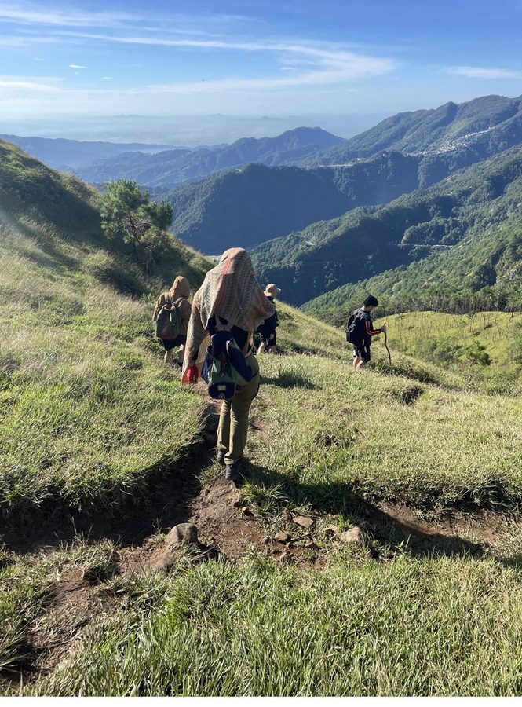

Some adventures are planned to perfection. Others find you — and leave a mark long after the blisters have healed. My hike up Mount Ulap on 31 October 2023 was very much the latter. My good friend Jeremy and I set off into the darkness before dawn, blissfully unaware of just how much this mountain would test us — and teach us.
Mount Ulap, nestled in the highlands of Benguet in the Philippines, is no casual stroll. At 1,800 metres above sea level, with a trail stretching 22 kilometres return, it demands every ounce of preparation a hiker can muster. We had enthusiasm in abundance. What we were slightly short on? Proper footwear.

Before the Sun日出之前
The alarm rang well before first light. By 6am, we were already on the trail — headlamps barely needed as the Philippine sky began to bruise with the first hints of amber. The morning air was cool and clean, carrying the scent of pine trees that blanket the lower slopes. It was Halloween morning, and the mountain had its own kind of magic.
The trail begins deceptively gentle — winding through village paths and bamboo groves before the serious climbing begins. But Mount Ulap is known for one thing above all else: its relentless ridge walks. Exposed, grassy, endlessly rolling — beautiful beyond words, and utterly unforgiving to the underprepared.


The 9km Milestone9公里里程碑
Halfway through any long hike, there comes a moment of reckoning. For us, it came at the green-and-yellow diamond sign planted along a rocky trail: 9 KM. We stopped, grinned, and gave a thumbs-up — because at that point, turning back would have been just as far as pushing forward. There is something wonderfully clarifying about that realisation.

📍 Our Day on the Mountain
Standing on Top of the World站在世界之巅
The signature landmark of Mount Ulap is its dramatic overhanging rock ledge — a cantilever of stone that juts out dramatically over a vast drop, with nothing below but green valleys fading into blue haze. Standing on it feels simultaneously thrilling and slightly mad. We stood there, arms raised, shouting with the pure joy of having climbed all that way.

"At 1,800 metres, with the Philippines spread out below us, even a twisted knee could not dim what we felt in that moment."
Paul, 31 October 2023The Slip That Taught Me Everything
I must confess my first mistake openly: I wore Skechers. Not trail runners. Not hiking boots. Skechers — comfortable, flat-soled, and with all the grip of a bar of soap on wet rock. For most of the hike, I compensated with a bamboo walking stick picked up from the trail. But the mountain eventually had the last word.
On a particularly rocky section of the descent, my right foot slid. Before I could catch myself, I went down, and my kneecap twisted on impact. It was painful — genuinely painful — but mercifully nothing was broken. I dusted myself off, adjusted my grip on the walking stick, and continued. That is the thing about being on a mountain: you have no choice but to keep going.

⚠️ The Lesson I Learned the Hard Way
- Always wear proper anti-slip hiking boots — fashion shoes have no place on a mountain trail
- Carry a walking stick — it saved me from worse falls and helped on every steep descent
- Start early — 6am is ideal for a 22km trail; heat and fading light are real challenges
- Carry more water than you think you need — the ridges are fully exposed to the sun
- Respect the mountain — Mount Ulap is rated for beginners, but it is still 1,800m and 22km
The Views That Made It All Worth It
Words struggle to capture what it is like to look out from a summit in the Cordillera. Layer after layer of green mountain, fading into grey-blue distance, clouds rolling through the valleys far below. Pine trees framing the horizon. The air thin and cool. Fellow hikers sitting quietly, umbrellas open for sun shade, just taking it all in.




After the Mountain
By the time we reached the trailhead — 11 hours after setting off, legs aching, knee throbbing — we were not thinking about the pain. We were thinking about the view from that rock ledge. About the morning mist in the pine forests. About the wild, exhilarating feeling of standing at 1,800 metres with your arms thrown wide open.
The twisted knee healed within days. And the best part? This hike was just one chapter of a glorious month in the Philippines — beaches, sunrises, sunsets, and long evenings at the spa being thoroughly pampered. Adventure and relaxation in perfect balance.
"From that day forward, I have never worn anything but proper hiking boots on a trail. The mountain taught me well."
Paul — a lesson permanently learnedMount Ulap is not the tallest mountain in the Philippines, nor the hardest. But it is undeniably one of the most beautiful — and for me, one of the most memorable. Not just for the views, but for what it asked of us, and what it gave back in return.
If you ever find yourself in Benguet with a free day and a pair of proper hiking boots — go. Start at 6am. Carry your walking stick. And when you reach that overhanging rock, raise your arms and shout. You will have earned it.